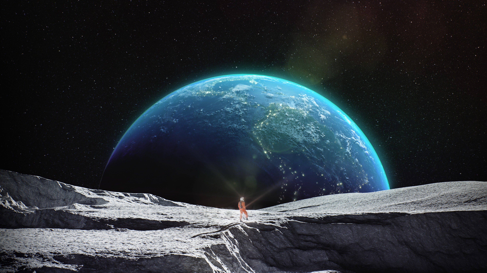

A Voyage Through Space
Welcome to A Voyage Through Space!
This is a website dedicated to scratching the surface of space for other astronomy geeks!
Here, you'll learn about black holes, time travel, all dimensions, star nurseries, and more...
Enjoy your mind exploding!